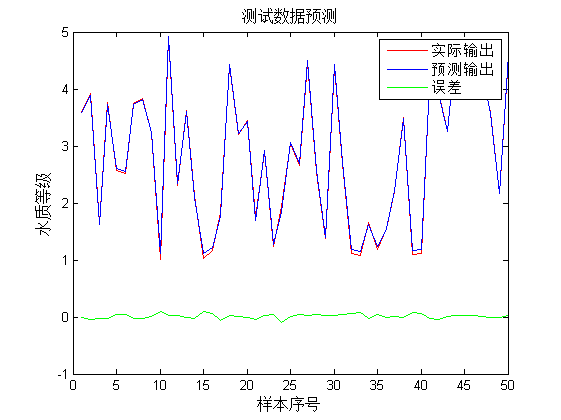
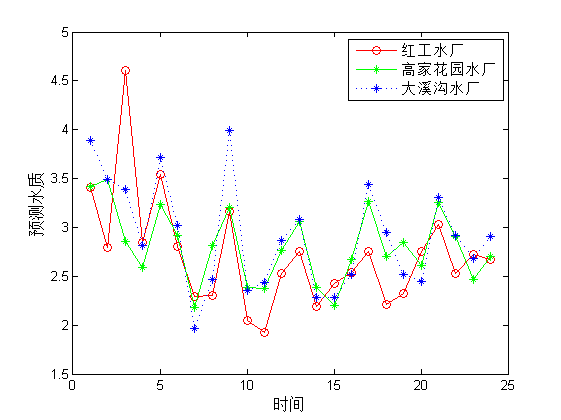

该代码为基于模糊神经网络的水质评价代码
| 该案例作者申明： |
| 1：本人长期驻扎在此板块里，对该案例提问，做到有问必答。本套书籍官方网站为：video.ourmatlab.com |
| 2：点此从当当预定本书：《Matlab神经网络30个案例分析》。 |
3：此案例有配套的教学视频，视频下载方式video.ourmatlab.com/vbuy.html。 |
| 4：此案例为原创案例，转载请注明出处（《Matlab神经网络30个案例分析》）。 |
| 5：若此案例碰巧与您的研究有关联，我们欢迎您提意见，要求等，我们考虑后可以加在案例里。 |
Contents
清空环境变量
clc clear
参数初始化
xite=0.001; alfa=0.05; %网络节点 I=6; %输入节点数 M=12; %隐含节点数 O=1; %输出节点数 %系数初始化 p0=0.3*ones(M,1);p0_1=p0;p0_2=p0_1; p1=0.3*ones(M,1);p1_1=p1;p1_2=p1_1; p2=0.3*ones(M,1);p2_1=p2;p2_2=p2_1; p3=0.3*ones(M,1);p3_1=p3;p3_2=p3_1; p4=0.3*ones(M,1);p4_1=p4;p4_2=p4_1; p5=0.3*ones(M,1);p5_1=p5;p5_2=p5_1; p6=0.3*ones(M,1);p6_1=p6;p6_2=p6_1; %参数初始化 c=1+rands(M,I);c_1=c;c_2=c_1; b=1+rands(M,I);b_1=b;b_2=b_1; maxgen=100; %进化次数 %网络测试数据，并对数据归一化 load data1 input_train output_train input_test output_test %选连样本输入输出数据归一化 [inputn,inputps]=mapminmax(input_train); [outputn,outputps]=mapminmax(output_train); [n,m]=size(input_train);
网络训练
%循环开始，进化网络 for iii=1:maxgen iii; for k=1:m x=inputn(:,k); %输出层结算 for i=1:I for j=1:M u(i,j)=exp(-(x(i)-c(j,i))^2/b(j,i)); end end %模糊规则计算 for i=1:M w(i)=u(1,i)*u(2,i)*u(3,i)*u(4,i)*u(5,i)*u(6,i); end addw=sum(w); for i=1:M yi(i)=p0_1(i)+p1_1(i)*x(1)+p2_1(i)*x(2)+p3_1(i)*x(3)+p4_1(i)*x(4)+p5_1(i)*x(5)+p6_1(i)*x(6); end addyw=yi*w'; %网络预测计算 yn(k)=addyw/addw; e(k)=outputn(k)-yn(k); %计算p的变化值 d_p=zeros(M,1); d_p=xite*e(k)*w./addw; d_p=d_p'; %计算b变化值 d_b=0*b_1; for i=1:M for j=1:I d_b(i,j)=xite*e(k)*(yi(i)*addw-addyw)*(x(j)-c(i,j))^2*w(i)/(b(i,j)^2*addw^2); end end %更新c变化值 for i=1:M for j=1:I d_c(i,j)=xite*e(k)*(yi(i)*addw-addyw)*2*(x(j)-c(i,j))*w(i)/(b(i,j)*addw^2); end end p0=p0_1+ d_p+alfa*(p0_1-p0_2); p1=p1_1+ d_p*x(1)+alfa*(p1_1-p1_2); p2=p2_1+ d_p*x(2)+alfa*(p2_1-p2_2); p3=p3_1+ d_p*x(3)+alfa*(p3_1-p3_2); p4=p4_1+ d_p*x(4)+alfa*(p4_1-p4_2); p5=p5_1+ d_p*x(5)+alfa*(p5_1-p5_2); p6=p6_1+ d_p*x(6)+alfa*(p6_1-p6_2); b=b_1+d_b+alfa*(b_1-b_2); c=c_1+d_c+alfa*(c_1-c_2); p0_2=p0_1;p0_1=p0; p1_2=p1_1;p1_1=p1; p2_2=p2_1;p2_1=p2; p3_2=p3_1;p3_1=p3; p4_2=p4_1;p4_1=p4; p5_2=p5_1;p5_1=p5; p6_2=p6_1;p6_1=p6; c_2=c_1;c_1=c; b_2=b_1;b_1=b; end E(iii)=sum(abs(e)); end figure(1); plot(outputn,'r') hold on plot(yn,'b') hold on plot(outputn-yn,'g'); legend('实际输出','预测输出','误差','fontsize',12) title('训练数据预测','fontsize',12) xlabel('样本序号','fontsize',12) ylabel('水质等级','fontsize',12)
Warning: Ignoring extra legend entries.

网络预测
%数据归一化 inputn_test=mapminmax('apply',input_test,inputps); [n,m]=size(inputn_test) for k=1:m x=inputn_test(:,k); %计算输出中间层 for i=1:I for j=1:M u(i,j)=exp(-(x(i)-c(j,i))^2/b(j,i)); end end for i=1:M w(i)=u(1,i)*u(2,i)*u(3,i)*u(4,i)*u(5,i)*u(6,i); end addw=0; for i=1:M addw=addw+w(i); end for i=1:M yi(i)=p0_1(i)+p1_1(i)*x(1)+p2_1(i)*x(2)+p3_1(i)*x(3)+p4_1(i)*x(4)+p5_1(i)*x(5)+p6_1(i)*x(6); end addyw=0; for i=1:M addyw=addyw+yi(i)*w(i); end %计算输出 yc(k)=addyw/addw; end %预测结果反归一化 test_simu=mapminmax('reverse',yc,outputps); %作图 figure(2) plot(output_test,'r') hold on plot(test_simu,'b') hold on plot(test_simu-output_test,'g') legend('实际输出','预测输出','误差','fontsize',12) title('测试数据预测','fontsize',12) xlabel('样本序号','fontsize',12) ylabel('水质等级','fontsize',12)
n =
6
m =
50
Warning: Ignoring extra legend entries.
 嘉陵江实际水质预测
load data2 hgsc gjhy dxg %-----------------------------------红工水厂----------------------------------- zssz=hgsc; %数据归一化 inputn_test =mapminmax('apply',zssz,inputps); [n,m]=size(zssz); for k=1:1:m x=inputn_test(:,k); %计算输出中间层 for i=1:I for j=1:M u(i,j)=exp(-(x(i)-c(j,i))^2/b(j,i)); end end for i=1:M w(i)=u(1,i)*u(2,i)*u(3,i)*u(4,i)*u(5,i)*u(6,i); end addw=0; for i=1:M addw=addw+w(i); end for i=1:M yi(i)=p0_1(i)+p1_1(i)*x(1)+p2_1(i)*x(2)+p3_1(i)*x(3)+p4_1(i)*x(4)+p5_1(i)*x(5)+p6_1(i)*x(6); end addyw=0; for i=1:M addyw=addyw+yi(i)*w(i); end %计算输出 szzb(k)=addyw/addw; end szzbz1=mapminmax('reverse',szzb,outputps); for i=1:m if szzbz1(i)<=1.5 szpj1(i)=1; elseif szzbz1(i)>1.5&&szzbz1(i)<=2.5 szpj1(i)=2; elseif szzbz1(i)>2.5&&szzbz1(i)<=3.5 szpj1(i)=3; elseif szzbz1(i)>3.5&&szzbz1(i)<=4.5 szpj1(i)=4; else szpj1(i)=5; end end % %-----------------------------------高家花园----------------------------------- zssz=gjhy; inputn_test =mapminmax('apply',zssz,inputps); [n,m]=size(zssz); for k=1:1:m x=inputn_test(:,k); %计算输出中间层 for i=1:I for j=1:M u(i,j)=exp(-(x(i)-c(j,i))^2/b(j,i)); end end for i=1:M w(i)=u(1,i)*u(2,i)*u(3,i)*u(4,i)*u(5,i)*u(6,i); end addw=0; for i=1:M addw=addw+w(i); end for i=1:M yi(i)=p0_1(i)+p1_1(i)*x(1)+p2_1(i)*x(2)+p3_1(i)*x(3)+p4_1(i)*x(4)+p5_1(i)*x(5)+p6_1(i)*x(6); end addyw=0; for i=1:M addyw=addyw+yi(i)*w(i); end %计算输出 szzb(k)=addyw/addw; end szzbz2=mapminmax('reverse',szzb,outputps); for i=1:m if szzbz2(i)<=1.5 szpj2(i)=1; elseif szzbz2(i)>1.5&&szzbz2(i)<=2.5 szpj2(i)=2; elseif szzbz2(i)>2.5&&szzbz2(i)<=3.5 szpj2(i)=3; elseif szzbz2(i)>3.5&&szzbz2(i)<=4.5 szpj2(i)=4; else szpj2(i)=5; end end % %-----------------------------------大溪沟水厂----------------------------------- zssz=dxg; inputn_test =mapminmax('apply',zssz,inputps); [n,m]=size(zssz); for k=1:1:m x=inputn_test(:,k); %计算输出中间层 for i=1:I for j=1:M u(i,j)=exp(-(x(i)-c(j,i))^2/b(j,i)); end end for i=1:M w(i)=u(1,i)*u(2,i)*u(3,i)*u(4,i)*u(5,i)*u(6,i); end addw=0; for i=1:M addw=addw+w(i); end for i=1:M yi(i)=p0_1(i)+p1_1(i)*x(1)+p2_1(i)*x(2)+p3_1(i)*x(3)+p4_1(i)*x(4)+p5_1(i)*x(5)+p6_1(i)*x(6); end addyw=0; for i=1:M addyw=addyw+yi(i)*w(i); end %计算输出 szzb(k)=addyw/addw; end szzbz3=mapminmax('reverse',szzb,outputps); for i=1:m if szzbz3(i)<=1.5 szpj3(i)=1; elseif szzbz3(i)>1.5&&szzbz3(i)<=2.5 szpj3(i)=2; elseif szzbz3(i)>2.5&&szzbz3(i)<=3.5 szpj3(i)=3; elseif szzbz3(i)>3.5&&szzbz3(i)<=4.5 szpj3(i)=4; else szpj3(i)=5; end end figure(3) plot(szzbz1,'o-r') hold on plot(szzbz2,'*-g') hold on plot(szzbz3,'*:b') xlabel('时间','fontsize',12) ylabel('预测水质','fontsize',12) legend('红工水厂','高家花园水厂','大溪沟水厂','fontsize',12) web browser www.matlabsky.com
Warning: Ignoring extra legend entries.
相关论坛： 《Matlab神经网络30个案例分析》官方网站：video.ourmatlab.com Matlab技术论坛：www.matlabsky.com Matlab函数百科：www.mfun.la Matlab中文论坛：www.ilovematlab.com |